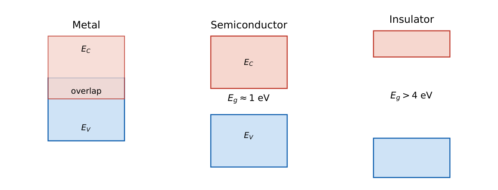

Energy Bands, Intrinsic and Extrinsic Semiconductors
In this chapter
Carrier concentrations (\(n\), \(p\), \(n_i\)), position of the Fermi level, mass-action law, compensated semiconductors and the temperature dependence of \(n_i\). Direct versus indirect band gap decides which materials emit light.
1.1 Formation of energy bands in solids
An isolated atom has discrete energy levels. When \(N\) atoms are brought together, the Pauli exclusion principle forces each level to split into \(N\) closely spaced levels, forming a band. In silicon (and germanium) the \(3s\) and \(3p\) levels hybridise into \(sp^3\) bonding and anti-bonding sets: the lower is the filled valence band (top at \(E_V\)), the upper the conduction band (bottom at \(E_C\)), separated by the forbidden gap \(E_g=E_C-E_V\).

| Material | \(E_g\) at 300 K (eV) | Type of gap | Remark |
|---|---|---|---|
| Germanium | 0.66 | indirect | early devices, high \(n_i\) |
| Silicon | 1.12 | indirect | ICs |
| GaAs | 1.42 | direct | LEDs, lasers, microwave |
| SiC (4H) | 3.2 | indirect | power devices |
| GaN | 3.4 | direct | blue LEDs, RF power |
| SiO\(_2\) | \(\approx9\) | – | insulator |
Metals have no gap (conduction and valence bands overlap or the band is half filled). Insulators have \(E_g\gtrsim4\) eV. The gap shrinks slowly with temperature: \(E_g(T)=E_g(0)-\dfrac{\alpha T^2}{T+\beta}\).
1.1.1 Direct and indirect band gap
In the \(E\)–\(k\) diagram a direct semiconductor (GaAs, GaN, InP) has the conduction-band minimum directly above the valence-band maximum at the same crystal momentum \(k\), so an electron–hole pair recombines by emitting a photon with energy \(\approx E_g\) and no change of \(k\). In an indirect semiconductor (Si, Ge) the minimum is at a different \(k\); recombination also needs a phonon (momentum conservation), so radiative recombination is weak. Hence LEDs and laser diodes use direct-gap materials; silicon solar cells use thick layers because absorption is weak.
\(\lambda\ (\mu\text{m})=\dfrac{1.24}{E\ (\text{eV})}\). Emission or absorption edge: \(\lambda_g=1.24/E_g\).
Si: \(1.107\,\mu\)m; GaAs: \(0.873\,\mu\)m; Ge: \(1.88\,\mu\)m.
1.2 Carriers in an intrinsic semiconductor
In a pure crystal every electron promoted to the conduction band leaves a hole: \(n=p=n_i\).
Fermi–Dirac: \(f(E)=\dfrac{1}{1+e^{(E-E_F)/kT}}\) (\(f=\tfrac12\) at \(E=E_F\)).
\(n=N_C\,e^{-(E_C-E_F)/kT},\qquad p=N_V\,e^{-(E_F-E_V)/kT}\).
Mass-action law: \(np=n_i^2=N_CN_V\,e^{-E_g/kT}\), and \(n_i\propto T^{3/2}e^{-E_g/2kT}\).
With respect to the intrinsic level \(E_i\): \(\;n=n_i\,e^{(E_F-E_i)/kT},\quad p=n_i\,e^{(E_i-E_F)/kT}\).
Density of states near the band edge: \(g(E)\propto\sqrt{E-E_C}\) (conduction band).
Intrinsic Fermi level \(E_i\) lies near mid-gap: \(E_i=\dfrac{E_C+E_V}{2}+\dfrac{kT}2\ln\dfrac{N_V}{N_C}+\ldots\)
Values at 300 K: Si \(n_i=1.5\times10^{10}\), Ge \(2.4\times10^{13}\), GaAs \(1.8\times10^{6}\) cm\({}^{-3}\). \(n_i\) roughly doubles for every \(\sim8^\circ\)C near room temperature in Si; from 300 to 350 K it increases by a factor of about \(28\) (the exponential dominates).
1.3 Extrinsic semiconductors
Doping a column-IV crystal with column-V atoms (P, As, Sb: donors) gives n-type material: the extra electron is bound with \(\approx0.04\) eV and is ionised at room temperature, leaving a fixed positive ion. Column-III atoms (B, Al, Ga: acceptors) give p-type material with holes as majority carriers.
Charge neutrality: \(p+N_D^+=n+N_A^-\).
n-type: \(n\approx N_D-N_A\ (\text{net donors})\), \(\ p=n_i^2/n\).
p-type: \(p\approx N_A-N_D\), \(\ n=n_i^2/p\).
General: \(n=\dfrac{N_D-N_A}{2}+\sqrt{\left(\dfrac{N_D-N_A}2\right)^2+n_i^2}\).
Fermi level: \(E_F-E_i=kT\ln\dfrac n{n_i}\) (n-type, above \(E_i\)); \(E_i-E_F=kT\ln\dfrac p{n_i}\) (p-type, below).
One decade of doping moves \(E_F\) by \(kT\ln10=59.5\) meV at 300 K.
\(N_D=10^{16}\,\text{cm}^{-3}\): \(n=10^{16}\), \(p=(1.5\times10^{10})^2/10^{16}=2.25\times10^4\,\text{cm}^{-3}\), \(E_F-E_i=0.0259\ln(10^{16}/1.5\times10^{10})=0.347\) eV (above the intrinsic level).
Compensated: \(N_D=5\times10^{16}\), \(N_A=2\times10^{16}\): net \(n=3\times10^{16}\), \(p=7.5\times10^3\). A semiconductor with \(N_A=N_D\) behaves as intrinsic.
1.3.1 Temperature regions
- Freeze-out (very low \(T\)): dopants not ionised, \(n\) rises with \(T\).
- Extrinsic (saturation): all dopants ionised, \(n\approx N_D\) constant; the useful operating range of devices.
- Intrinsic (high \(T\)): \(n_i\gg N_D\), thermal generation dominates, \(E_F\to E_i\). Devices fail; wide-gap materials extend the range.
Degenerate doping: \(E_F\) enters a band (\(N\gtrsim10^{19}\) cm\({}^{-3}\)); Boltzmann approximations fail, the semiconductor behaves like a metal (used in tunnel diodes and contacts).
(i) \(np=n_i^2\) holds only in thermal equilibrium (not with injection or bias). (ii) In a p-type material \(E_F\) lies below \(E_i\). (iii) Doping does not change the product \(np\). (iv) \(n_i\) depends on \(E_g\) and \(T\) but not on doping. (v) Indirect-gap does not mean no light absorption; it means weak radiative recombination.
Always compute the majority carrier first from net doping, then the minority from \(n_i^2/n\). Fermi-level shift \(=59.5\,\text{meV}\times\log_{10}(\text{ratio})\). If \(n=10\,n_i\) then \(E_F-E_i=60\) meV.
1.4 GATE problems
Q1. In silicon doped with \(10^{16}\) cm\({}^{-3}\) boron the electron concentration is (A) \(10^{16}\) (B) \(2.25\times10^4\) (C) \(1.5\times10^{10}\) (D) \(10^{10}\) cm\({}^{-3}\).
Q2. The wavelength emitted by a GaAs (\(E_g=1.42\) eV) LED is approximately (A) 0.87 \(\mu\)m (B) 1.1 \(\mu\)m (C) 0.65 \(\mu\)m (D) 1.42 \(\mu\)m.
Q3. The Fermi level in n-type silicon lies (A) at \(E_i\) (B) below \(E_i\) (C) above \(E_i\) (D) in the valence band.
Q4. Which material has a direct band gap? (A) Si (B) Ge (C) GaAs (D) C (diamond).
Answers: Q1 (B). Q2 (A): \(1.24/1.42\). Q3 (C). Q4 (C).
Q5. For \(N_D=10^{16}\) cm\({}^{-3}\) and \(n_i=1.5\times10^{10}\) cm\({}^{-3}\) at 300 K (\(kT/q=0.0259\) V), \(E_F-E_i\) is (A) 0.17 eV (B) 0.35 eV (C) 0.56 eV (D) 0.70 eV.
Q6. A silicon sample has \(N_D=5\times10^{16}\) and \(N_A=2\times10^{16}\) cm\({}^{-3}\). The hole concentration (cm\({}^{-3}\)) is (A) \(7.5\times10^3\) (B) \(4.5\times10^3\) (C) \(3\times10^{16}\) (D) \(2.25\times10^4\).
Q7. The Fermi level of a p-type sample is \(0.30\) eV below \(E_i\). The hole concentration is approximately (use \(kT=0.0259\) eV, \(n_i=1.5\times10^{10}\)) (A) \(1.6\times10^{15}\) (B) \(1.6\times10^{10}\) (C) \(1.5\times10^{15}\) (D) \(5\times10^{15}\) cm\({}^{-3}\).
Answers: Q5 (B): \(0.0259\ln(6.67\times10^5)=0.347\). Q6 (A): \(n=3\times10^{16}\), \(p=2.25\times10^{20}/3\times10^{16}=7.5\times10^3\). Q7 (A): \(p=1.5\times10^{10}e^{0.30/0.0259}=1.5\times10^{10}\times1.07\times10^5=1.6\times10^{15}\).
Q8. Position of \(E_F\) above \(E_i\) when \(n=100\,n_i\) (meV, nearest integer): .
Q9. For an intrinsic Si sample at 350 K, ratio \(n_i(350)/n_i(300)\) using \(n_i\propto T^{3/2}e^{-E_g/2kT}\) with \(E_g=1.12\) eV (nearest integer): .
Answers: Q8: \(kT\ln100=0.0259\times4.605=119\) meV. Q9: \(\approx28\).
Q10. Select the correct statements. (A) \(np=n_i^2\) in equilibrium irrespective of doping. (B) Direct-gap semiconductors are efficient light emitters. (C) In n-type material \(E_F>E_i\). (D) \(n_i\) is independent of temperature.
Answers: Q10: (A), (B), (C).
T1. \(p\) in n-type Si with \(N_D=10^{15}\). T2. \(\lambda_g\) for Si. T3. Meaning of \(f(E_F)\).
Answers: T1: \(2.25\times10^5\) cm\({}^{-3}\). T2: \(1.107\,\mu\)m. T3: \(1/2\).
- Bands from level splitting; \(E_g\): Ge 0.66, Si 1.12, GaAs 1.42 eV; \(\lambda=1.24/E\).
- \(np=n_i^2\); \(n=n_ie^{(E_F-E_i)/kT}\); \(n_i\propto T^{3/2}e^{-E_g/2kT}\).
- Majority from net doping; minority \(=n_i^2/\text{majority}\); \(E_F\) shift \(59.5\) meV/decade.
- Direct gap \(\Rightarrow\) radiative; indirect needs a phonon.